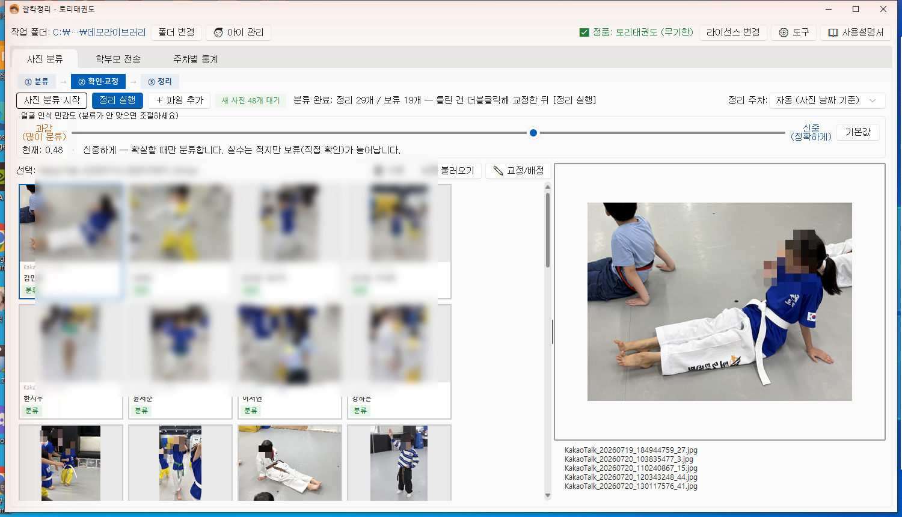

수업 끝나고 쌓인 사진 수백 장, 누가 누구인지 넘겨 보며 밤늦게 정리해 본 적 있으신가요?
찰칵정리는 광주 토리태권도 관장이 그 고생을 없애려고 직접 개발한 프로그램입니다.
사진을 폴더에 넣으면 얼굴인식이 아이를 알아보고 아이별 폴더에 자동 정리합니다.
주요 기능
- 수백 장 사진·동영상을 얼굴인식으로 아이별 폴더에 자동 분류
- 주차 폴더 정리 + 파일명에 날짜·아이 이름 자동 입력
- 확신이 없는 사진은 "보류"로 분리, 클릭 몇 번으로 교정 (교정할수록 똑똑해짐)
- 학부모 전송용 아이별 ZIP 만들기 + 전송 완료 체크 (빠뜨림 방지)
- 도장 로고 워터마크, 주차·월별 통계 (사진 못 받은 아이 자동 표시)
지원 환경: Windows 10/11 · 설치 후 바로 체험판으로 사용 가능 (아이 30명, 1회 30개 파일)
이렇게 사용해요

1. 사진을 넣고 [분류 시작] — 얼굴인식이 아이별로 자동 분류합니다. 결과를 카드로 확인하고, 틀린 건 클릭 몇 번으로 교정하면 다음부터 더 똑똑해집니다.

2. 학부모에게 전송 — 아이별로 사진을 묶어 카카오톡으로 보냅니다. 보낸 아이는 자동 체크되어 빠뜨리는 일이 없습니다.

3. 한눈에 확인 — 주차별로 아이마다 몇 장을 받았는지 표시하고, 사진이 없는 아이는 빨간색으로 알려줘 미리 챙길 수 있습니다.
※ 화면 속 사진은 개인정보 보호를 위해 얼굴을 흐리게 처리했습니다.
어린이집·유치원에서도 씁니다
등원하는 아이들 사진을 찍고 그날 알림장에 아이별로 올리는 일은, 선생님 하루에서 적지 않은 시간을 잡아먹습니다.
수십 장 중에서 이 아이만 골라내고, 이름별로 정리하고, 다시 올리고 — 이걸 매일 반복하는 건 생각보다 고된 일입니다.
찰칵정리는 그 골라내는 일을 대신합니다.
아이 사진은 원 밖으로 한 장도 나가지 않습니다.
원장님들이 가장 먼저 물으시는 게 이겁니다. 찰칵정리는 모든 처리가 원내 PC 안에서만 이루어집니다.
클라우드 업로드도, 외부 서버 전송도 없습니다. 인터넷이 끊겨 있어도 그대로 작동합니다.
- 매일 쌓이는 아이별 사진 정리에 시간을 너무 많이 쓰고 있다
- 아이 사진을 외부 서비스에 올리는 게 마음에 걸린다
- 유독 사진이 적은 아이가 있어 늘 신경 쓰인다 (통계에서 빨간색으로 알려드립니다)
- 원아 수가 많아 손으로 정리하는 게 한계다
- 선생님마다 사진 정리 방식이 달라 통일이 안 된다
※ 키즈노트·아이엠스쿨 같은 알림장 앱으로 자동 전송되는 기능은 없습니다.
아이별 폴더와 ZIP까지 만들어 드리고, 앱에 올리는 것은 선생님이 직접 하셔야 합니다. 이 점은 미리 분명히 말씀드립니다.
※ 원아가 30명이 넘으면 체험판만으로는 확인이 어렵습니다. 카카오톡 채널로 신청하시면 제한 없는 7일 무료 이용권을 보내드립니다.
이용 요금
| 구독 기간 | 정가 | 출시 기념 이벤트가 |
|---|
| 7일 체험 | 무료 (카카오톡 채널로 신청) |
| 1개월 | 20,000원 | 15,000원 |
| 3개월 | 60,000원 | 50,000원 |
| 6개월 | 120,000원 | 100,000원 |
| 12개월 | 240,000원 | 200,000원 |
구독 신청·결제 안내는 카카오톡 채널 "찰칵정리" 1:1 채팅으로 문의해 주세요. 라이선스 코드는 입금 확인 후 즉시 발급됩니다.
구독하는 방법
7일 무료 이용권 — 기기번호 없이, 코드만 붙여넣으면 끝
- 카카오톡 채널 찰칵정리에 "체험"이라고 남겨주세요.
- 바로 7일 이용권 코드를 보내드립니다. (제한 없이 전 기능)
- 프로그램 위쪽 [라이선스 등록]에 붙여넣고 [등록]을 누르면 끝입니다.
체험은 번거로운 절차 없이 코드 하나로 시작하실 수 있게 했습니다.
정식 구독
- 프로그램 위쪽 [라이선스 등록] 창을 열면 이 PC 기기번호(예: A1B2-C3D4)가 보입니다. [복사]를 누르세요.
- 같은 창의 [💬 카카오톡으로 문의] 버튼을 누르면 채팅창이 열립니다. 기기번호를 붙여넣고 원하시는 기간을 알려주세요.
- 입금 계좌를 안내해 드리고, 확인되면 이 PC 전용 코드를 보내드립니다.
- 받은 코드를 [라이선스 등록]에 붙여넣으면 정식판으로 전환됩니다.
정식 구독 코드는 등록하신 PC에서만 작동합니다(코드 공유 방지). 컴퓨터를 바꾸시면 채널로 알려주세요, 새 코드로 옮겨 드립니다.
갱신하실 때는 새 코드만 등록하시면 되고, 그동안 등록하신 아이와 학습된 내용은 그대로 유지됩니다.
자주 묻는 질문
- 어떻게 설치하나요?
- 다운로드한 zip 파일에서 마우스 오른쪽 클릭 → [압축 풀기] → 안에 있는 ChalkakSetup을 더블클릭하면 설치됩니다. 같은 폴더의 "1. 먼저 읽어주세요"에 그림 없이도 따라 할 수 있게 순서가 적혀 있어요.
- 설치할 때 파란 경고창이 떠요.
- 새로 나온 프로그램이라 Windows가 아직 몰라서 뜨는 안내이며, 바이러스가 아닙니다. 창의 [추가 정보] → [실행]을 누르면 설치됩니다. (개인 개발자가 만든 프로그램은 대부분 이 창이 뜹니다)
- 얼굴 인식이 틀리면 어떻게 하나요?
- 틀린 사진을 골라 올바른 아이로 교정하면 됩니다. 교정한 내용이 학습에 반영되어 다음부터 점점 더 정확해집니다. 애매한 사진은 "보류"로 빠지니 안심하세요.
- 사진은 어디에 저장되나요?
- 지정하신 폴더 안에서만 아이별로 정리됩니다. 사진이 외부(인터넷)로 전송되는 일은 전혀 없습니다. 모든 처리는 내 컴퓨터 안에서 이루어집니다.
- 컴퓨터를 잘 몰라도 쓸 수 있나요?
- 네. 사진을 폴더에 넣고 버튼 몇 개만 누르면 됩니다. 설치 시 안내 마법사가 처음 설정을 도와드리고, 사용설명서도 함께 드립니다.
- 아이가 30명이 넘는데 쓸 수 있나요?
- 네. 30명 제한은 체험판에만 해당합니다. 카카오톡 채널로 신청하시면 인원·사진 수 제한이 없는 7일 무료 이용권을 보내드리니, 실제 규모 그대로 테스트해 보실 수 있습니다.
- 어린이집·유치원에서도 쓸 수 있나요?
- 네. 태권도장이든 어린이집이든 "아이별로 사진을 나눠야 한다"는 일은 똑같습니다. 다만 키즈노트·아이엠스쿨 같은 알림장 앱으로 자동 전송되는 기능은 없고, 아이별 폴더나 ZIP까지 만들어 드립니다. 앱에 올리는 건 선생님이 직접 하셔야 합니다.
- 먼저 써보고 결정하고 싶어요.
- 설치만 하면 체험판을 바로 쓸 수 있고, 카카오톡 채널에 "체험"이라고 남기시면 모든 기능이 열리는 7일 무료 이용권을 보내드립니다. 이때는 기기번호가 필요 없고, 받으신 코드를 붙여넣기만 하시면 됩니다.
- '기기번호'가 뭔가요?
- 정식 구독 코드를 그 컴퓨터에만 발급하기 위한 번호입니다(코드 공유 방지). [라이선스 등록] 창에 자동으로 표시되니 [복사]만 누르시면 되고, 바로 옆 [카카오톡으로 문의] 버튼을 누르면 채팅창이 열리니 붙여넣어 보내주세요. 직접 찾으실 필요 없습니다. 7일 무료 이용권은 기기번호 없이 발급해 드립니다.
- 컴퓨터를 바꾸면 어떻게 하나요?
- 카카오톡 채널로 알려주시면 새 컴퓨터의 기기번호로 코드를 다시 발급해 드립니다. 남은 기간은 그대로 이어집니다. 추가 비용은 없습니다.